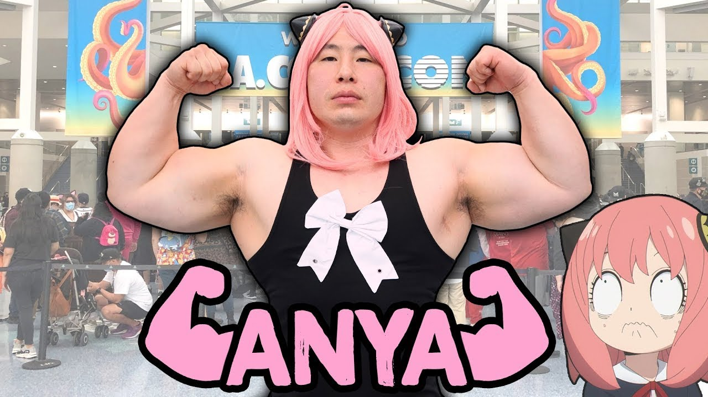
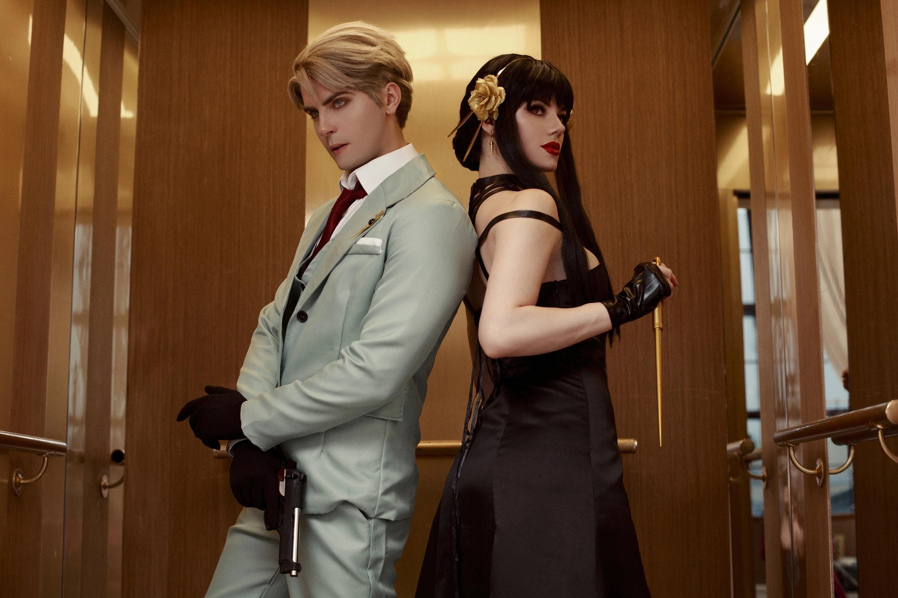

Les meilleures créations de la communauté
🨠Fan Arts

@ArtByLuna
Yor en pleine mission, style aquarelle

@MikaDraws
Petite Anya et son regard malicieux
🖋️ Fan Fictions
📸 Cosplay

@SoummanCosplay en Anya, fidèle jusqu'aux détails

@AgentTwilight et @Tueuse Yor incarne parfaitement notre faux couple préfére
🬠Vidéos & Musiques
- AMV "Secrets & Missions" sur YouTube – montage intense sur Yor & Loid. Voir la vidéo
- Cosplay Yor Forger x Anya par @Trà ÄặngCosplay – Incroyablement talenteuse Écouter